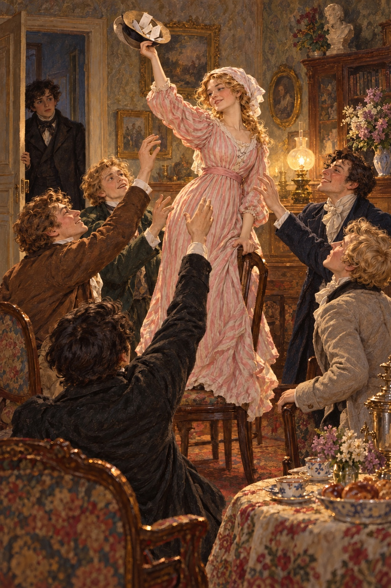
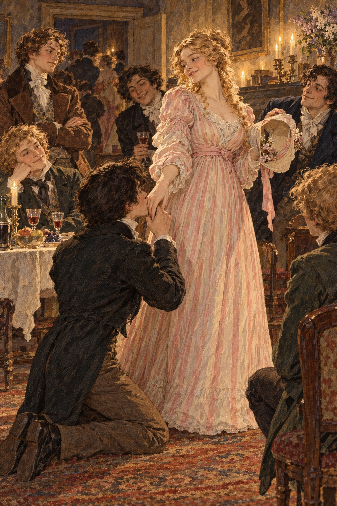
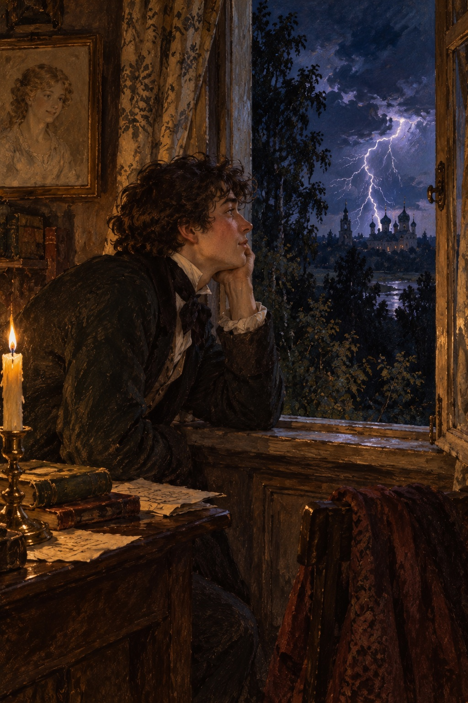

Ivan Turgenev · First Love
제7장
정확히 여덟 시에
나는 자세키나 공작부인의
별채 현관으로 들어섰다.
긴 웃옷을 입고
앞머리도 한껏 올린 차림이었다.
늙은 하인이
침울하게 나를 쳐다보았다.
그는 마지못해
긴 의자에서 일어섰다.
응접실에서는
즐거운 목소리들이 들렸다.
문을 열자마자
나는 놀라 뒷걸음쳤다.
방 한가운데 놓인 의자 위에
지나이다가 서 있었다.
그녀는 남자 모자를
두 손으로 들고 있었다.
의자 주위에는
남자 다섯이 몰려 있었다.
남자들은 모자 안으로
손을 넣으려 했고,
지나이다는 모자를 높이 들고
힘껏 흔들었다.

나를 보자
지나이다가 외쳤다.
“잠깐, 잠깐만요!
새 손님이 왔어요.
이분에게도 제비를 드려야지요.”
그녀는 가볍게
의자에서 뛰어내렸다.
내 웃옷 소맷부리를 잡고
말했다.
“어서 오세요.
왜 거기 서 계세요?
여러분, 소개할게요.
이분은 이웃집 아드님,
볼데마르 씨예요.”
그러고는 내게
손님들을 하나씩 가리켰다.
“말렙스키 백작,
의사 루신,
시인 마이다노프,
퇴역 대위 니르마츠키,
그리고 이미 만나셨던
경기병 장교 벨로브조로프예요.
모두 잘 지내 보세요.”
나는 너무 당황해서
누구에게도 인사하지 못했다.
루신은
정원에서 나를 매섭게 나무랐던
그 검은 머리 남자였다.
나머지는 처음 보는 사람들이었다.
“백작님,
볼데마르 씨의 제비도
써 주세요.”
지나이다가 말했다.
“불공평합니다.”
백작이
폴란드 억양을 조금 섞어
대꾸했다.
“이분은 우리와
벌칙 놀이를 하지 않았잖습니까.”
그는
표현이 풍부한 갈색 눈에
좁고 하얀 코,
작은 입 위로
가느다란 콧수염이 난
잘생긴 흑발 남자였다.
옷도 무척 멋지게 입었다.
“불공평하죠.”
벨로브조로프와 니르마츠키도
맞장구쳤다.
니르마츠키는
마흔쯤 되어 보였다.
얼굴은 보기 흉할 만큼
얽은 데다
머리는 까맣게 곱슬거렸다.
등이 조금 굽고
다리도 휘었다.
견장 없는 군복 웃옷을
앞섶을 벌린 채 입었다.
“쓰시라니까요.”
지나이다가 거듭 말했다.
“무슨 반항이에요?
볼데마르 씨는 처음 오셨잖아요.
오늘은 이분에게
규칙을 적용하지 않겠어요.
투덜거리지 말고 쓰세요.
제가 그렇게 하고 싶으니까.”
백작은 어깨를 으쓱했지만
순순히 고개를 숙였다.
반지 낀 흰 손으로
펜을 들었다.
종잇조각을 찢어
글을 적기 시작했다.
“적어도 무슨 놀이인지
설명은 해 드려야겠군요.”
루신이
비꼬는 목소리로 말했다.
“아니면 이 젊은 분은
영문도 모를 테니까요.
지금 우리는 벌칙 놀이를 합니다.
공녀님이 벌칙에 걸렸고,
당첨 제비를 뽑은 사람은
공녀님의 손에
입을 맞출 수 있습니다.
알아들으셨습니까?”
나는 그를 쳐다보기만 했다.
머리가 멍한 채 서 있었다.
지나이다는 다시
의자 위로 뛰어올라
모자를 흔들기 시작했다.
모두가 손을 뻗었다.
나도 그들을 따라 손을 뻗었다.
“마이다노프.”
지나이다가
키가 큰 젊은 남자에게 말했다.
그는 얼굴이 가늘고
눈은 작고 침침했다.
유난히 긴 검은 머리가
어깨로 흘러내렸다.
“시인이시니
너그럽게 양보하세요.
제비를 볼데마르 씨께 주세요.
그럼 이분에게는
기회가 두 번 생기잖아요.”
하지만 마이다노프는
고개를 저으며
긴 머리카락을 휘날렸다.
나는 맨 마지막으로
모자에 손을 넣었다.
제비를 하나 꺼내
펼쳤다.
세상에!
‘입맞춤’이라는 글자를 보고
내게 무슨 일이 일어났던가.
“입맞춤!”
나도 모르게 외쳤다.
“잘했어요!
당첨됐네요.”
지나이다가 외쳤다.
“정말 기뻐요!”
그녀는 의자에서 내려와
맑고 달콤한 눈으로
나를 바라보았다.
내 심장이
발끝으로 굴러 떨어지는 듯했다.
“그쪽도 기쁘세요?”
“제가…?”
나는 겨우 중얼거렸다.
“그 제비를 저한테 파세요.”
벨로브조로프가
내 귀 바로 옆에서
불쑥 말했다.
“백 루블 드리겠습니다.”
나는 장교를
성난 눈으로 노려보았다.
지나이다는 손뼉을 쳤고
루신은 외쳤다.
“훌륭해!”
“하지만 진행자로서
규칙은 지켜야겠습니다.”
루신이 말을 이었다.
“볼데마르 씨,
한쪽 무릎을 꿇으세요.
우리 방식이니까요.”
지나이다가
내 앞에 섰다.
나를 더 자세히 보려는 듯
고개를 조금 기울이고
정중한 표정으로 손을 내밀었다.
눈앞이 흐려졌다.
한쪽 무릎을 꿇으려다가
두 무릎을 모두 꿇어 버렸다.
입술이 그녀의 손가락에
어설프게 닿았다.
손톱에 코끝이
조금 긁히기까지 했다.

“좋았어요!”
루신이 외치며
나를 일으켜 세웠다.
벌칙 놀이는 계속됐다.
지나이다는
나를 자기 곁에 앉혔다.
그녀는 별별 벌칙을
다 생각해 냈다.
한 번은
조각상이 되어야 했다.
그녀는 못생긴 니르마츠키를
받침대로 골랐다.
배를 깔고 엎드려
얼굴까지 가슴에 파묻게 했다.
웃음소리가
한순간도 그치지 않았다.
나는 점잖은 집에서
조용히, 따로 자랐다.
그래서 그 소란과
거침없는 즐거움,
낯선 사람들과 섞여 노는
새로운 경험이
머리를 어지럽혔다.
술에 취한 것만 같았다.
나는 누구보다
크게 웃고 떠들었다.
옆방에서
이베르스키 관문에서 온
관리와 일을 의논하던
늙은 공작부인까지
무슨 일인가 보러 나왔다.
하지만 나는 너무 행복해서
누구의 비웃음도,
곁눈질도 신경 쓰지 않았다.
지나이다는 계속
나를 유달리 챙겼다.
곁에서 떠나지 못하게 했다.
한 벌칙에서는
지나이다와 나란히 앉아
같은 비단 손수건을
머리 위에 덮어야 했다.
그리고 그녀에게
내 비밀을 말해야 했다.
그 답답하고 향기로운
반투명한 어둠 속에
우리 두 머리가
나란히 들어가던 순간을
나는 잊지 못한다.
가까이서 그녀의 눈이
부드럽게 빛났다.
벌어진 입술에서는
따뜻한 숨이 흘렀다.
이가 보였고,
머리카락 끝이
내 뺨을 간질이고 태웠다.
나는 말이 없었다.
그녀는 신비롭고
짓궂게 웃었다.
마침내 속삭였다.
“그래서요?”
나는 얼굴이 빨개져
웃기만 했다.
고개를 돌리고
숨을 겨우 쉬었다.
벌칙 놀이가 지겨워지자
줄을 잡고 손등을 피하는
놀이를 했다.
내가 멍하니 있다가
그녀에게 손가락을
세게 맞았을 때
얼마나 기뻤던가!
그 뒤로는
일부러 딴청을 피웠다.
하지만 그녀는
내게 손을 내밀게 해 놓고도
놀리기만 할 뿐
때리지 않았다.
그날 밤
우리는 별짓을 다 했다.
피아노를 치고
노래하고
춤도 췄다.
집시 무리 흉내도 냈다.
니르마츠키에게
곰 분장을 시키고
소금 탄 물을 마시게 했다.
말렙스키 백작은
여러 가지 카드 묘기를 보였다.
끝에는 패를 섞은 뒤
휘스트 놀이의
으뜸패를 몽땅
자기 손에 쥐었다.
루신이 그 솜씨를
‘축하드리는 영광’을 표했다.
마이다노프는
자기 시 《살인자》의
몇 구절을 낭송했다.
당시는 낭만주의가
한창이었다.
그는 검은 표지에
피처럼 붉은 글씨로
제목을 박아
시집을 낼 생각이었다.
이베르스키 관문에서 온 관리의
무릎에 놓인 모자를 훔치고,
돌려받고 싶으면
카자크 춤을 추라고 했다.
늙은 보니파티에게는
여자 모자를 씌웠다.
지나이다는
남자 모자를 썼다.
무슨 일이 더 있었는지
일일이 셀 수가 없다.
벨로브조로프만은
거의 내내 구석에 서 있었다.
이마를 찌푸린 채
화가 나 있었다.
가끔 눈이 핏빛으로 충혈되고
얼굴까지 벌게졌다.
당장이라도 달려들어
우리 모두를 나뭇조각처럼
사방으로 흩어 놓을 것 같았다.
하지만 지나이다가
그를 쳐다보고
손가락을 들어 타이르면
그는 다시
제 구석으로 물러났다.
마침내 모두가 지쳤다.
공작부인은 스스로도
소란에 익숙하다 했고
평소에는 어떤 고함도
아랑곳하지 않는 사람이었다.
그런데 그날은 그녀마저
피곤하다고 쉬고 싶어 했다.
밤 열한 시가 넘자
간단한 야식이 나왔다.
오래돼 마른 치즈 한 조각과
잘게 썬 햄을 넣은
차가운 작은 파이들이었다.
내 입에는 그 파이가
어떤 고급 고기 파이보다도
맛있었다.
포도주는 단 한 병이었다.
목이 불룩하고
병색이 검은
이상한 병이었다.
포도주에서는
장미 빛깔 물감 냄새가 났다.
어차피 아무도 마시지 않았다.
나는
녹초가 될 만큼 지쳤지만
그만큼 행복한 채
별채를 나왔다.
헤어질 때
지나이다는 내 손을
세게 잡았다.
다시 한번
수수께끼 같은 웃음을 지었다.
무겁고 습한 밤공기가
달아오른 내 얼굴에 닿았다.
폭풍이 올 것 같았다.
검은 구름은
부풀어 오르며
하늘을 기어갔다.
연기 같은 윤곽이
눈에 띄게 바뀌었다.
바람은
어두운 나무를
불안하게 떨게 했다.
먼 하늘 너머 어딘가에서
천둥이 혼잣말하듯
낮고 성난 소리로 우르릉거렸다.
나는 뒷문으로
내 방에 들어갔다.
내 시중을 들던 하인이
바닥에서 자고 있었다.
그를 넘어가야 했다.
하인이 잠에서 깨어
나를 보았다.
어머니가 또 화가 나
나를 데리러 사람을 보내려 했는데
아버지가 말렸다고 했다.
나는 언제나 잠자리에 들기 전
어머니께 인사하고
축복을 구했다.
그날은 어쩔 수 없었다.
나는 하인에게
혼자 옷을 벗고 잘 테니
들어가라고 했다.
촛불도 껐다.
하지만 옷을 벗지도
잠자리에 들지도 않았다.
의자에 앉아
마법에 걸린 사람처럼
오래 움직이지 않았다.
처음 느끼는 감정이
너무도 달콤했다.
조금씩 주위를 둘러보고
숨을 천천히 쉬었다.
그날 일을 떠올리다
소리 없이 웃기도 했다.
그러다가 문득
속이 서늘해졌다.
‘내가 사랑에 빠졌구나.
이게 사랑이구나.’
지나이다의 얼굴이
어둠 속을 조용히 떠다녔다.
떠다니기만 할 뿐
멀어지지 않았다.
입술에는 여전히
수수께끼 같은 웃음이 있었다.
눈은 살짝 옆에서
나를 바라보았다.
묻는 듯하고,
생각에 잠긴 듯하고,
다정한 눈길이었다.
헤어질 때의 그 눈길 그대로였다.
마침내 나는 일어나
발끝으로 침대까지 갔다.
옷도 벗지 않은 채
조심스럽게 머리를
베개에 뉘었다.
조금만 거칠게 움직여도
가슴 가득한 이 감정이
흩어질 것만 같았다.
누웠지만
눈도 감지 못했다.
곧 방 안으로
희미한 빛이
자꾸 흘러드는 게 보였다.
몸을 일으켜
창문을 바라보았다.
창틀이
신비하게 희뿌연 유리창을
또렷하게 갈라 놓았다.
‘뇌우가 왔구나.’
정말 뇌우였다.
아주 멀리 지나가는 바람에
천둥은 들리지 않았다.
그저 하늘에서
길고 가지 친 번개가
쉬지 않고 희미하게 번쩍였다.
번쩍인다는 말보다
파르르 떨며 꿈틀댄다는 말이
더 어울렸다.
죽어 가는 새의 날개 같았다.
나는 일어나
창가로 갔다.
거기서 아침까지 서 있었다.
번개는 한순간도 그치지 않았다.
사람들이 이르는
‘참새의 밤’이었다.

나는 소리 없는 모래밭과
네스쿠치노예 정원의
검은 덩어리,
먼 건물들의 노란 앞면을
바라보았다.
건물도 약한 번갯불마다
몸을 떠는 듯했다.
시선을 뗄 수 없었다.
소리 없는 번개,
억눌린 빛의 번뜩임이
내 안에서 조용히 치솟는
은밀한 충동에
대답하는 것 같았다.
동이 트기 시작했다.
새벽빛이
붉은 얼룩으로 번졌다.
해가 다가올수록
번개는 점점 희미하고 짧아졌다.
떨림도 드물어지더니
마침내 사라졌다.
막 떠오른 낮의
분명하고 정신을 깨우는 빛이
번개를 삼켜 버렸다.
내 안의 번개도 사라졌다.
몹시 지쳤지만
마음은 고요했다.
그런데 지나이다의 모습은
여전히 내 영혼 위에
의기양양하게 떠 있었다.
다만 그 모습은
평온해진 듯했다.
날아오르는 백조가
늪의 풀에서 멀어지듯,
그녀는 곁을 둘러싼
볼품없는 사람들로부터
홀로 벗어났다.
잠이 들면서
나는 마지막으로
그녀의 모습에
작별과 믿음이 담긴
숭배의 마음을 바쳤다.
아, 부드러운 감정과
나직한 목소리,
마음을 움직인 사람에게 찾아오는
너그러움과 평온함,
첫사랑의 애틋함 속에서
녹아드는 기쁨은
지금 어디에 있는가.